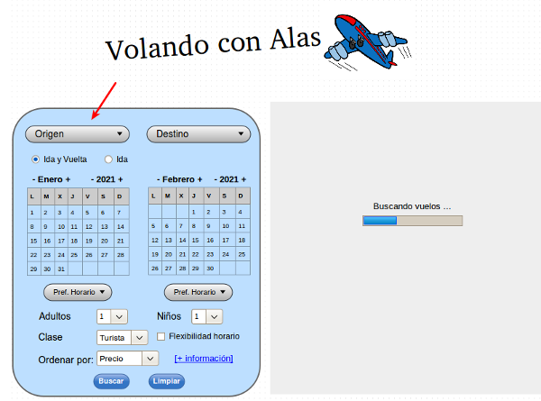
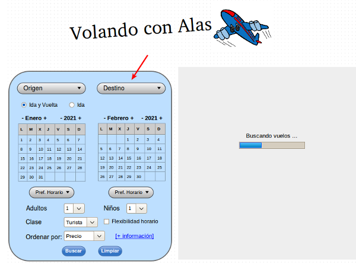
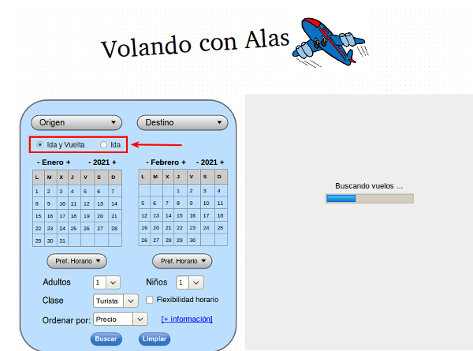
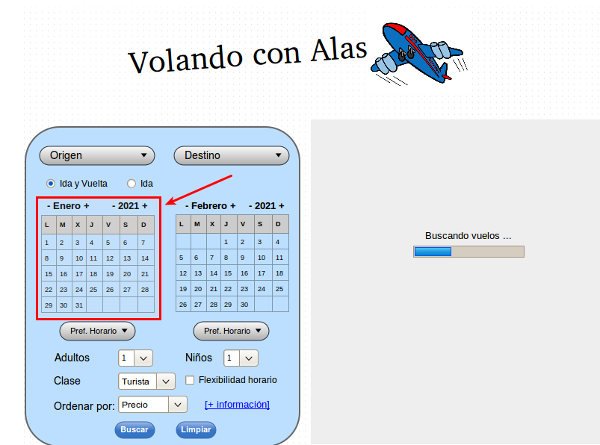
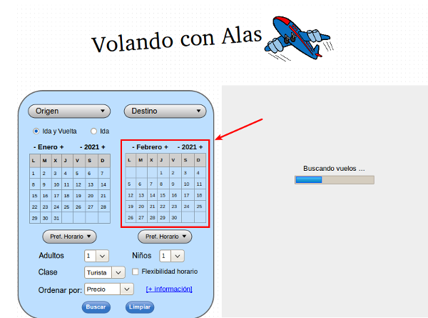
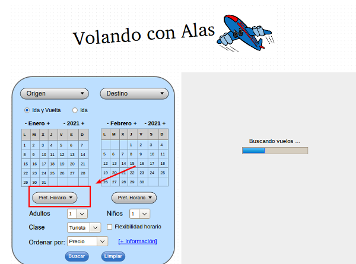
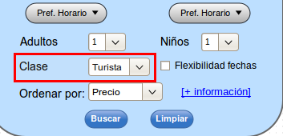
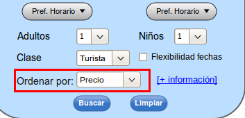
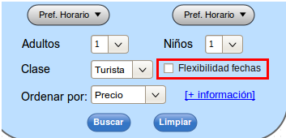

A continuación se va a detallar cómo se debe realizar la búsqueda de vuelos mediante el módulo de Reservas, sida detenidamente los pasos descritos:
Seleccione la cuiudad de origen:

Selección de origen
Seleccione la ciudad de destino:

Selección de destino
Seleccione tipo de viaje: ida y vuelta / sólo ida

Seleccione tipo de viaje: ida y vuelta / sólo ida
Indique la fecha de salida

Selección de fecha de salida
Indique la fecha de regreso

Selección de fecha de regreso
Si tiene preferencias de horarios de salida o regreso:

Preferencia de horario
Tipo de billete: Turista / Primera clase

Tipo de Billete
Orden de presentación de los vuelos disponibles:

Opción de orden de vuelos
Opción para flexibilidad de Fechas

Flexibildiad de Fechas